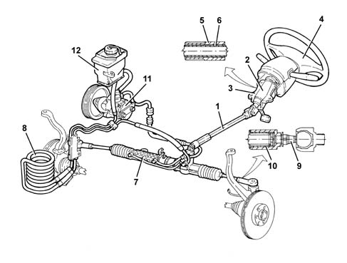

Introduction - STEERING
- Path
- Descriptions > 41 STEERING > Introduction - STEERING
- Kind
- system description
- Applies to
- all engines; all production periods
- Interactive page
- https://sloeber94.github.io/elrnDB-a156/en/#/3239213
Applies to: all engines; production: fino a 03/98, da 04/98 a 02/99
All versions are equipped with power steering.
This steering system guarantees:
- steering safety and precision at high speeds
- good handling
- limited effort during parking manoeuvres and at low speeds.
The telescopic type sterring column in two sections contributes greatly to the resistance of the vehicle in all types of frontal impacts.
DESCRIPTION
The steering column consists of:
- a lower collapsible section (1) which allows the position of the steering wheel (4) to remain fixed in the case of a frontal impact
- an upper section (2) supported by a steel bracket and a magnesium support (3) which prevent vibrations of the steering wheel (4).
With the advantage of:
- increasing the passive safety of the vehicle
- improving driving comfort.
The steering column slides for the axial adjustment and moves in a rocking motion for the vertical adjustment.
The steering lock is the 'friction' type in accordance with the regulations governing the prevention of break-in attempts.
The system consists of bush (5) and a spring (6) fitted on the upper steering column (2).
The spring has a 'smooth part' on the outside and a 'toothed part' on the inside.
The toothed part is a press fit on the upper shaft bearing down slightly on the surface and preventing sliding in relation to the shaft.
The smooth part is a press fit on the inner diameter of the bush (5) and can slide in relation to the bush with a controlled torque (between 10 and 24 daNm).
The function of the friction system limits the maximum force which can be transmitted and guarantees the following in the case of a theft attempt:
- the security of the steering column
- impossibility of lock mechanism breakage
with the advantage of ensuring:
- the anti-theft function
- driving safety.
The steering column slides for the axial adjustment and moves in a rocking motion for the vertical adjustment.

1, Lower column 2, Upper column 3, Magnesium support 4, Steering wheel 5, Bush 6, Spring 7, Power assisted steering box 8, Cooling coil 9, Steering rods 10, Flexible element 11, Power assisted steering pump 12, Power assisted steering fluid reservoir
The steering lock is the 'friction' type in accordance with the regulations governing the prevention of break-in attempts.
The system consists of bush (5) and a spring (6) fitted on the upper steering column (2).
The spring has a 'smooth part' on the outside and a 'toothed part' on the inside.
The toothed part is a press fit on the upper shaft bearing down slightly on the surface and preventing sliding in relation to the shaft.
The smooth part is a press fit on the inner diameter of the bush (5) and can slide in relation to the bush with a controlled torque (between 10 and 24 daNm).
The function of the friction system limits the maximum force which can be transmitted and guarantees the following in the case of a theft attempt:
- the security of the steering column
- impossibility of lock mechanism breakage with the advantage of ensuring:
- the anti-theft function
- driving safety.
The power asssisted steering box (7) has oversize racks and rods to:
- limit the flexible yield of the steering line
- guarantee improved driving precision.
The following have been adopted to minimize the hydraulic pulses of the power assisted steering sysem which can produce noise:
- longer high pressure fluid pipes with an improved shape and internal resonators
- power assisted steering fluid cooling coils (8) which prevet cavitation.
The cooling coil is connected to the relevant pipes by rapid attachment couplings.
The steering rods (9) are fitted with a flexible element (10) to dampen the vibrations due to the kinematic effect of the suspenion with the advantage of eliminating the vibrations at the steering wheel in the different steering conditions.
Applies to: engines: 1.6 TS , 1.8 TS, 2.0 JTS, 2.0 JTS; all production periods
CONSTRUCTION FEATURES
The steering system has a telescopic type steering column and power steering for all versions.
This steering system guarantees:
- steering safety and precision at high speeds
- good handling;
- reduced effort in parking manoeuvres and at low speeds.
Applies to: engines: 3.2 V6; all production periods
CONSTRUCTION FEATURES
The steering system has a telescopic type steering column and power steering for all versions.
This steering system guarantees:
- steering safety and precision at high speeds;
- good handling;
- reduced effort in parking manoeuvres and at low speeds.
Applies to: engines: 2.5 V6, 1.9 JTD 8v , 2.4 JTD 10v; all production periods
CONSTRUCTION FEATURES
The steering system has a telescopic type steering column and power steering for all versions.
This steering system guarantees:
- steering safety and precision at high speeds
- good handling;
- reduced effort in parking manoeuvres and at low speeds.